Frontend Developer
& Web Designer
GUTIERREZ JESICA
Mis días laborales transcurren entre frames y líneas de código, creando experiencias digitales que combinan diseño, funcionalidad y una base técnica sólida.
Seguí leyendo y conocerás un poco más de mi trabajo.
ProyectosPerfil profesional
Mi recorrido comenzó en el diseño en comunicación visual, donde aprendí que una buena solución surge de comprender el problema que se busca resolver.
Con el tiempo, la curiosidad me llevó a profundizar en la experiencia de usuario y, más adelante, en el desarrollo frontend, para participar activamente en la implementación de las soluciones que ayudaba a diseñar.
Hoy trabajo como Frontend Developer con una visión orientada al producto, colaborando con equipos multidisciplinarios para crear experiencias digitales que respondan tanto a las necesidades de las personas como a los objetivos del negocio.
En los últimos años también incorporé conocimientos en accesibilidad y SEO técnico, porque creo que un producto digital debe ser usable, encontrable e inclusivo.
- Resolución de problemas
-
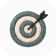
Orientación a resultados -
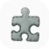
Pensamiento crítico -
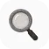
Atención al detalle - Trabajo en equipo
- Empatía
-
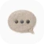
Comunicación efectiva - Aprendizaje continuo
Tecnologías
Proyectos 2025/26
En cada proyecto parto del diseño propuesto, buscando respetar su concepto y lenguaje visual, pero también aportando una mirada técnica y funcional: detectar oportunidades de mejora y mediar para integrar soluciones que favorezcan la funcionalidad, la navegabilidad y la accesibilidad, tanto en web como en aplicaciones.
Todos los proyectos fueron desarrollados teniendo en cuenta su rendimiento y visibilidad: optimización de carga, estructura técnica y SEO, para facilitar su indexación en buscadores y su correcta interpretación por parte de bots y otros sistemas de rastreo.
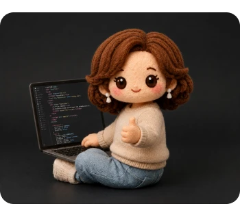
No se trata solo de llevar un diseño a código, sino de encontrar el equilibrio entre cómo se ve,
cómo funciona y cómo es percibido por las personas y los sistemas que lo recorren.
Fundación Comparlante
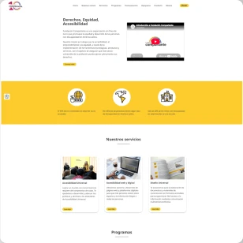
- Wordpress
- Elementor
- Bootstrap
- Woo-commerce
- HTML5
- CSS
- JavaScript
- Accesibilidad
PsiSalud
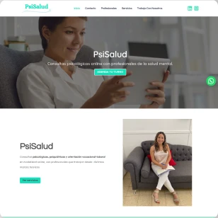
- UX/UI
- Wordpress
- Elementor
- CSS
- SEO técnico
- Accesibilidad
- Arq. de la Información
En Paz Espacio
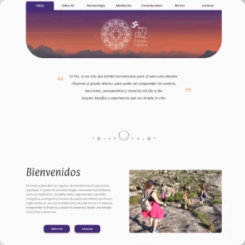
- UX/UI
- Divi Builder
- Wordpress
- CSS
- JavaScript
- Accesibilidad
- Arq. de la Información
Grupo NET
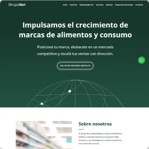
- Wordpress
- Divi Builder
- CSS
Sanatorio San Carlos
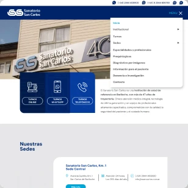
- Wordpress
- Divi Builder
- CSS
Luz y Fuerza Patagonia
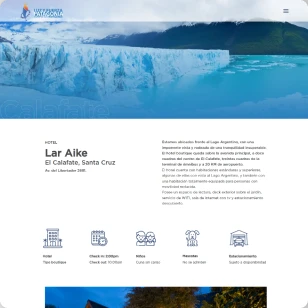
- Wordpress
- Divi Builder
- CSS
¿Todavía no conociste a la persona detrás de estos proyectos?
Te invito a descubrir un poco más sobre mí.
¿Trabajamos juntos?
Si llegaste hasta acá, quizás viste algo de mi trabajo que te interesó.
Podés descargar mi CV o escribirme para conversar sobre un proyecto, u oportunidad laboral.
Estoy interesada en nuevos desafíos.